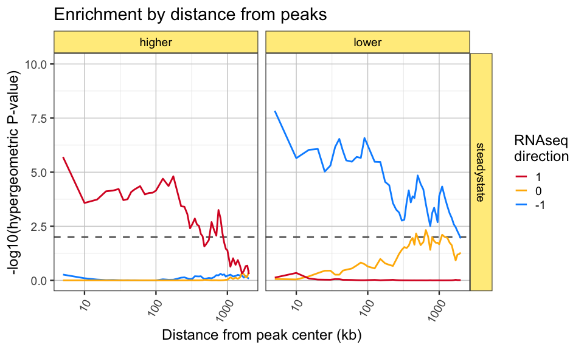
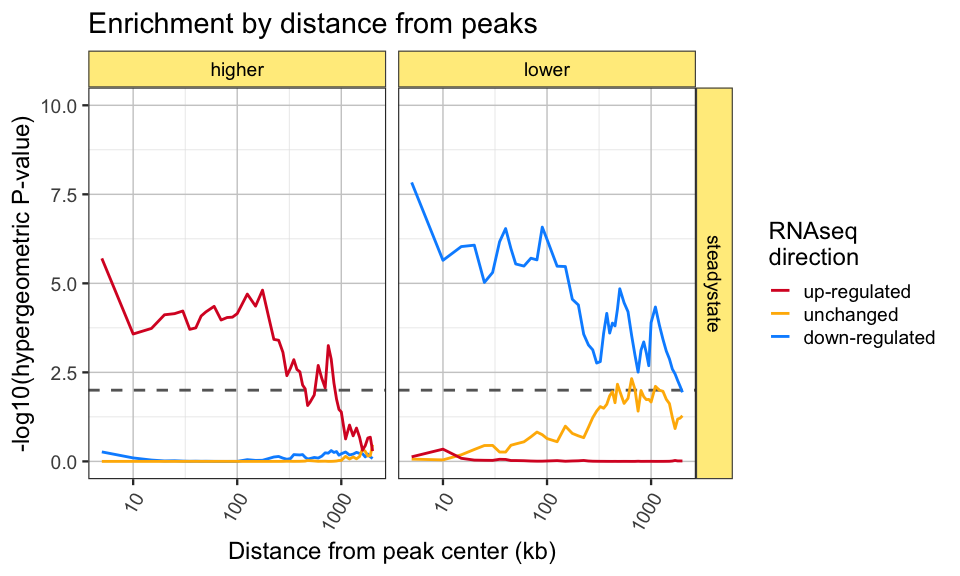
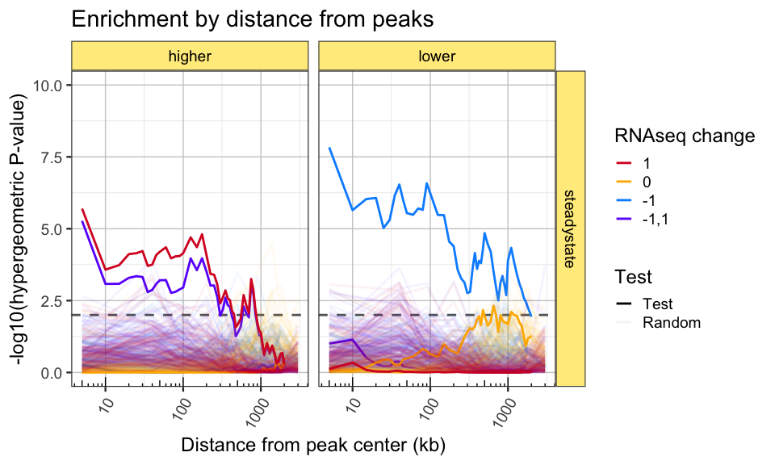
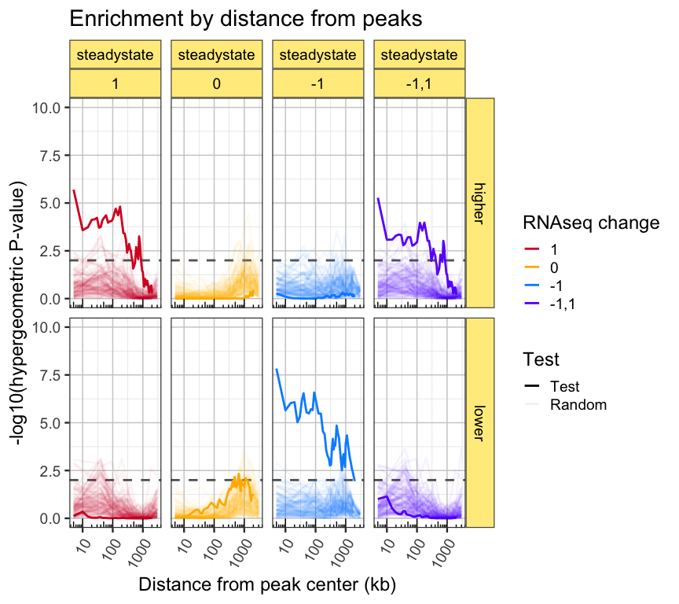

ATACseq peak enrichment using sliding scale distance.
The goal of the R package peakdistanceenrichment is to provide convenient way to reproduce the enrichment method used by Langer et al 2019, eLife.
Installation
remotes::install_github("jmw86069/peakdistanceenrichment")
The workflow
In short:
-
A set of “features” are provided, where each feature has a “category”.
- In this case, the features are RNAseq genes, and the category values are
-1for down-regulated genes,1for up-regulated genes, and0for genes not changed.
- In this case, the features are RNAseq genes, and the category values are
-
One or more sets of “peaks” are provided.
- In this case, there are two sets of peaks:
- higher accessibility ATACseq peaks
- lower accessibility ATACseq peaks
A range of distances is provided, by default
0to5000in kilobases, so the largest range is 5,000,000 bases.-
For each set of peaks, each category is tested for enrichment against the other categories.
- For example features with category
-1are tested to see if they overlap lower accessibility peaks more than you would randomly expect compared to features with category0, 1. - The features are extended across the range of distances, and this test is repeated for each distance.
- For example features with category
Example analysis
The package contains sample files sufficient to reproduce Figure 2B of the Langer et al 2019 eLife paper.
The steps below import the example files and create the required GRanges objects.
library(peakdistanceenrichment) library(GenomicRanges) # import hg19 chromosome sizes hg19file <- system.file("extdata", "hg19.sizes.txt", package="peakdistanceenrichment"); hg19df <- data.table::fread(hg19file, data.table=FALSE); hg19seqinfo <- Seqinfo(seqnames=hg19df[,1], seqlengths=hg19df[,2], isCircular=hg19df[,3], genome=hg19df[,4]) ## Import features, TSS sites tssfile <- system.file("extdata", "BAF47KD_steadystate_RNAseq_hits.bed", package="peakdistanceenrichment"); tssdf <- data.table::fread(tssfile, data.table=FALSE) colnames(tssdf) <- c("seqnames", "start", "end", "gene", "hit") tssgr <- as(tssdf, "GRanges") ## assign seqinfo seqinfo(tssgr) <- hg19seqinfo; ## Create tss list tssL <- list(); tssL$steadystate <- tssgr; ## Load peak files higherbed <- system.file("extdata", "BAF47KD_steadystate_higher_accessibility_peaks.bed", package="peakdistanceenrichment"); higherdf <- data.table::fread(higherbed, data.table=FALSE) colnames(higherdf)[1:3] <- c("seqnames", "start", "end"); highergr <- as(higherdf, "GRanges") seqinfo(highergr) <- hg19seqinfo; lowerbed <- system.file("extdata", "BAF47KD_steadystate_lower_accessibility_peaks.bed", package="peakdistanceenrichment"); lowerdf <- data.table::fread(lowerbed, data.table=FALSE) colnames(lowerdf)[1:3] <- c("seqnames", "start", "end"); lowergr <- as(lowerdf, "GRanges") seqinfo(lowergr) <- hg19seqinfo; ## Create peak list for each set of TSS sites peaksL <- list(); peaksL$steadystate <- list( higher=highergr, lower=lowergr);
Next, the features and peaks are tabulated across the range of distances, for each category.
## Call peak_feature_ranged_counter() ## - count features per peak ## - using an expanded peak size range_counts <- peak_feature_ranged_counter( peaksL=peaksL, featuresL=tssL, expand_range_kb=c(5, 2000), verbose=TRUE, category_colname="hit"); #> ## (16:55:56) 05Feb2021: peak_feature_ranged_counter(): cat_levels:-1,0,1 #> ## (16:55:56) 05Feb2021: peak_feature_enrich(): Processing Experiment:steadystate #> ## (16:55:56) 05Feb2021: peak_feature_enrich(): Processing PeakSet:higher, length(PeakSet):3121, length(featuresGR):17462 #> ## (16:55:59) 05Feb2021: peak_feature_enrich(): Processing PeakSet:lower, length(PeakSet):4186, length(featuresGR):17462
The counts are tested with hypergeometric enrichment, to test each category, for each set of peaks, and at each distance. The output is a data.frame that include the hypergeometric P-value in column "phyper.p". It also includes the values passed to phyper(), specific the q, m, n, k values.
paramsDF <- peak_feature_ranged_enrichment(range_counts, test_cats=list(c("1"), c("0"), c("-1"))) print(head(paramsDF)) #> Experiment PeakSet Range q_drawn1 m_drawn1_undrawn1 n_drawn0_undrawn0 #> 1.1 steadystate higher 5 60 1768 15694 #> 1.2 steadystate higher 10 79 1768 15694 #> 1.3 steadystate higher 15 104 1768 15694 #> 1.4 steadystate higher 20 132 1768 15694 #> 1.5 steadystate higher 25 157 1768 15694 #> 1.6 steadystate higher 30 177 1768 15694 #> k_drawn0_drawn1 test_cat phyper.p #> 1.1 328 1 1.99e-06 #> 1.2 537 1 2.65e-04 #> 1.3 737 1 1.84e-04 #> 1.4 955 1 7.64e-05 #> 1.5 1167 1 7.10e-05 #> 1.6 1336 1 5.98e-05
This result can be plotted manually, or by using the helper function plot_ranged_enrichment().
## Plot the enrichment P-values gg_pre <- plot_ranged_enrichment(paramsDF, test_cat_title="RNAseq\ndirection", draw_points=FALSE) + scale_x_log10() + annotation_logticks(sides="b") print(gg_pre)

If you want to update the category labels, you can do something like this:
## You can be fancy and assign labels paramsDF$test_cat <- factor( ifelse(paramsDF$test_cat %in% "1", "up-regulated", ifelse(paramsDF$test_cat %in% "-1", "down-regulated", "unchanged")), levels=c("up-regulated", "unchanged", "down-regulated")); gg_pre2 <- plot_ranged_enrichment(paramsDF, test_cat_title="RNAseq\ndirection", draw_points=FALSE) + scale_x_log10() gg_pre2

If you’re curious, you can view the intermediate counts by using the helper function plot_ranged_counts(). One key feature of this plot is the distance at which the “non-overlapping” profiles recede down to zero. Eventually, at some infinite distance, every feature should overlap every peak, therefore the non-overlapping features should become zero.
gg_prc <- plot_ranged_counts(range_counts) + facet_grid(Subclass~Experiment+PeakSet) gg_prc

Random permutations
After receiving a very helpful reviewer request, we implemented analysis steps to test enrichment of random ATACseq peaks, to ensure that our observed enrichment tests were substantially different than what one would observe from using any random locations in the genome.
The strategy was to take the full set of ATACseq peaks that were tested for differential changes, and randomize the results of that test. This approach was preferred instead of generating fully random locations in the hg19 human genome, because ATACseq peaks are known to have a bias toward active gene promoter regions, and other particular areas of genome function. We wanted to test enrichment using random peaks that have the same bias that one would expect from a set of ATACseq peaks in the cell type being studied.
An alternative approach that we did not implement, might be to randomize the RNAseq “category values” across the RNAseq features. Ultimately the two approaches should address the same question, and in largely similar ways, yielding the same result.
First, import the full set of ATACseq peaks tested, which includes 163,782 regions in the genome.
# BAF47KD_steadystate_tested_peaks.bed randombed <- system.file("extdata", "BAF47KD_steadystate_tested_peaks.bed", package="peakdistanceenrichment"); randomdf <- data.table::fread(randombed, data.table=FALSE) colnames(randomdf)[1:3] <- c("seqnames", "start", "end"); randomgr <- as(randomdf, "GRanges") seqinfo(randomgr) <- hg19seqinfo; randomsL <- list() randomsL$steadystate <- randomgr;
Next, call peak_feature_ranged_counter() 100 times and add the argument randomsL which supplies the set of peaks from which random peaks will be chosen. This way, the number of random peaks will be equal to the number of test peaks.
Note for this scenario, expand_kb is defined to have fewer random distances, to decrease the time required.
## generate 100 different random subsets of ATAC peaks expand_kb <- get_expanded_ranges(20, c(5, 3000)); n_iter <- 100; random_counts_list <- lapply(seq_len(n_iter), function(n){ if ((n / 10) %% 1 == 0 || n == 1) { jamba::printDebug("Iteration:", n); } random_range_counts <- peak_feature_ranged_counter(peaksL=peaksL, featuresL=tssL, randomsL=randomsL, do_random=TRUE, expand_kb=expand_kb, verbose=FALSE, category_colname="hit"); #plot_ranged_counts(random_range_counts, dir_colors); random_range_counts; }); #> ## (16:56:03) 05Feb2021: Iteration:1 #> ## (16:56:11) 05Feb2021: Iteration:10 #> ## (16:56:20) 05Feb2021: Iteration:20 #> ## (16:56:29) 05Feb2021: Iteration:30 #> ## (16:56:38) 05Feb2021: Iteration:40 #> ## (16:56:47) 05Feb2021: Iteration:50 #> ## (16:56:56) 05Feb2021: Iteration:60 #> ## (16:57:05) 05Feb2021: Iteration:70 #> ## (16:57:14) 05Feb2021: Iteration:80 #> ## (16:57:23) 05Feb2021: Iteration:90 #> ## (16:57:32) 05Feb2021: Iteration:100
Next we combine the random count results with the previous test results. Note that each iteration must be numbered in order for the line plots to be properly connected.
## combine with real test data already calculated all_range_counts <- rbind(range_counts, jamba::rbindList(random_counts_list)); ## Assign iteration numbers so lines can be drawn appropriately all_range_counts$Iteration <- rep(seq(from=0, to=n_iter), c(nrow(range_counts), jamba::sdim(random_counts_list)[,1])); ## Define the "Test" from "Random" data all_range_counts$Test <- rep(c("Test", "Random"), c(nrow(range_counts), sum(jamba::sdim(random_counts_list)[,1])));
Finally we perform hypergeometric tests, then plot the results using alpha transparency for the random permutation results.
## Hypergeometric enrichment all_paramsDF <- peak_feature_ranged_enrichment(all_range_counts, test_cats=list(c("1"), c("0"), c("-1"), c("-1","1"))); gg_all_enrich <- plot_ranged_enrichment( subset(all_paramsDF, q_drawn1 < m_drawn1_undrawn1), PeakSet_title="ATAC change", draw_points=FALSE, x_include=c(5, 2000), alpha_sub=c(`Test`=1, `Random`=0.05), test_cat_title="RNAseq change") + scale_x_log10() + annotation_logticks(sides="b") print(gg_all_enrich)

For this purpose, I prefer to look at each panel separately, as shown below.
print(gg_all_enrich + facet_grid(PeakSet~Experiment+test_cat))
